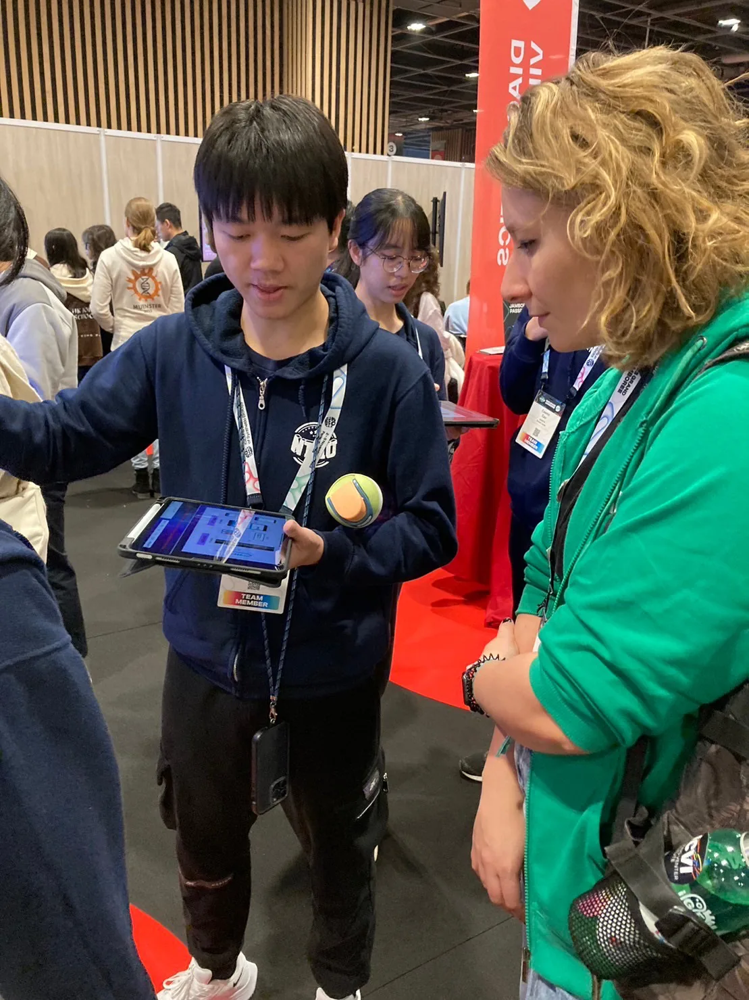
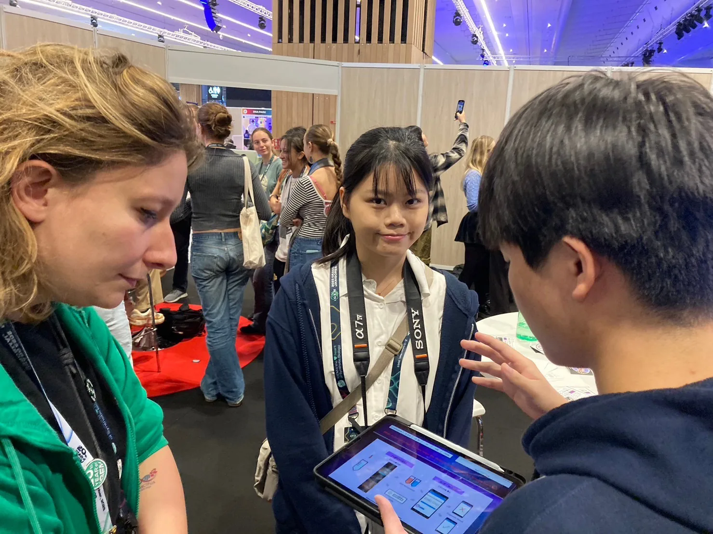
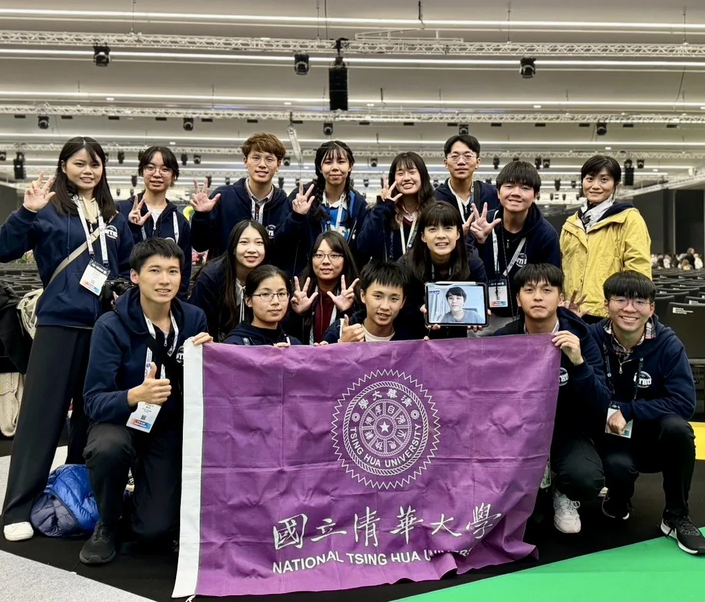

57 "big meows," 45 "small meows," countless rounds of research, reports, fundraising, interviews, and exchanges. In November 2023, I visited a country this far away for the first time-10,099 km from home: Paris. Even now, it still feels unreal that one year later, we arrived at the iGEM venue carrying the results we had built day by day, and eventually won a Gold Medal. Looking back, we truly accomplished so much together in that year.
I still remember when we first met. Back then, I was lost about the future. I didn't have a clear "special skill" like others. From the winter break case study, to selecting a topic, to finding the right professor, and then dividing into teams with different roles-searching for simulation tools, building models, reading papers, making the wiki, prototyping, doing hardware, doing software-everything feels like yesterday. I'll never forget the twice-a-week meetings, discussions that lasted until dawn, models revised again and again, filming promotion videos together, traveling to the Linkou meetup, being chased by the wiki deadline, and completing our research on early colorectal cancer screening.

NTHU · DRY LAB · 2023That year, I tried so many things for the first time: being a team lead, touching synthetic biology, doing campus campaigning, 3D modeling, sleeping less than six hours for four consecutive days, flying Emirates, leaving Asia for the first time... so many firsts. I sacrificed coursework, basketball practice, my summer break, and sleep-yet I felt it was all worth it. Working with 15 incredible people, exchanging with hundreds of teams from around the world on the international synthetic biology stage-within just one year, 16 people from completely different backgrounds earned a Gold Medal. I was truly happy, and unbelievably proud to have such amazing teammates.

CDG · GRAND JAMBOREE · 2023-11In this 16-person team, I served as the Dry Lab leader (and later found out I was the youngest in the group ). I handled Dry Lab tasks and acted as a bridge between subteams. Everyone came from different departments, and I'm deeply grateful that the Dry Lab members were so supportive of my ideas and gave me advice as an inexperienced leader. There are simply too many people to thank: our captain who carried everything (countless nights together until late night-or even sunrise ), our all-around senior (no need to explain-she's amazing at everything ), Yi-Wen (always overloaded with tasks and my endless questions ), Zi-Wei (not always present, but always there for us-our QA hero ), the unstoppable WL team, and our crucial backbone HP. I'm so glad we worked together toward a shared goal. Even though it has been almost a year since the competition, the memories still feel dreamlike and vivid.

CDG · 2023-11-11 · GOLDLife is long. We will meet many things and many people. At 19, because I met you all, my life became incredibly bright.
#8th
57次大咪、45次小咪，無數的研究、報告、拉贊、採訪、交流，在2023年的11月第一次來到這麼遠的國家，10099公里--巴黎，依舊不敢相信一年後的今天我們帶著無數日月累積的成果來到了iGEM比賽會場，並最終獲得金牌，回過頭看這一年我們真的一起完成了很多事情..
記得初次相見歡的時候，那時候的我對未來十分的迷茫，沒有像其他人一樣擁有一技之長，從一開始寒假的case study到後來二擇一的主題，接著尋找適合的教授，再到後來各組各司其職，開始尋找各式模擬軟體、找model、找文獻、建網頁、做模型、搞硬體、搞軟體，一切都恍如昨日，永遠無法忘記一個禮拜兩次的meeting、討論到凌晨的會議、修正再修正的model、一起拍promotion video 、一起去林口交流會、一起被wiki 追殺的日子、一起完成檢測早期大腸癌的研究。這一年中自己也初次嘗試了各式各樣的事情，好多的第一次，第一次當組長、第一次接觸合成生物學、第一次去校園拉票、第一次3D建模、第一次連續四天睡不到六個小時、第一次搭阿聯酋、第一次離開亞洲⋯真的真的好多的第一次，在這一年中也犧牲了學業、犧牲了練球、犧牲了暑假、犧牲了睡眠，但我卻覺得一切都很值得，能跟如此優秀的15個人一起共事，並在國際合成生物學的舞台上，與數百支來自世界各國的隊伍交流，短短一年間，不同背景的我們，16個人，拿到了Gold Medal，我真的很開心也無比自豪有一群這麼厲害的隊友！
在這16人的團隊中，身為Dry lab leader（後來才知道是組內年紀最小的），負責掌管DL大小事以及擔任與其他組溝通的橋樑，我們組內每個人都來自不同的學系，很感謝DL各位很包容我的想法，也會適時的給我這不成熟的組長建議，要感謝的人和事情實在太多了，忙前忙後最扛的隊長（無數次陪我到深夜甚至黎明）、最強最全能的學姊（完全不必多說，真的什麼都強）、最忙最多事的羿文（總是要被我要求一大堆工作還有被問一大堆問題）、最神的梓維（人不在但心都在，我們QA時的神），當然還有最無敵最無解人人書卷的WL各位，以及至關重要最堅強的後盾HP，真的很開心能跟你們一起共事，一起朝向共同的目標努力，雖然比賽已經過了快一年了，但過往的回憶如今仍如夢似幻、歷歷在目...
人生很長，總會遇到很多事情，也會遇到很多人，在19歲的這年，因為遇見了你們而無比精彩。
#8th